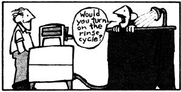

Here's an alternative to the Saturday-night bath in a washtub.
My friend and I acquired our homestead in the mountains of western Washington through the good graces of a pair of true pioneers. After that hardy couple had compiled over 160 years of life experience between them, they decided that residing ten miles from the nearest town and a mile from the road was no longer in their best interests. And when the two sold their property, my partner and I were the lucky buyers.
Our move from Seattle to the Cascade Mountains involved a complete change of lifestyle for us, and-like many back-to-thelanders-we put in our fair share of grimy, sweaty hours while shaping up the newly purchased acreage. During that period the one remnant of "civilization" that we both missed most was the chance to take an occasional honest-to-goodness hot shower. There were times when a dip in a nearby cold lake or a sponge bath just didn't measure up . . . and we began to think that heaven could be defined as the opportunity to simply stand under a hot spray forever.
Although our home would probably appear primitive to many people, however, we do have two amenities that make it possible to run a wringer washer: a cold water system (which connects with the outdoor faucets and an indoor sink) and electricity. And since we don't have a septic tank, we've set up the vintage Maytag in a sunny clearing amid some towering Douglas firs. A hose supplies the machine with cold water . . . an extension cord from the cabin furnishes the juice . . . and after the machine's done its work, the gray water drains into a hole in the ground beneath it.
One day while I was doing the wash (and getting rather hot and gritty myself in the process of cleaning our clothes), an idea popped into my head: If the machine's pump could empty a tank of dirty laundry water, why couldn't it dispose of a tankful of clean liquid . . . and do so on my waiting head?
A few days later, after the notion had percolated a bit, an adventuresome acquaintance came for a weekend visit. Within four hours from the time I shared my brainstorm, the Maytag shower was primed and ready to go.
We began bringing about the washer's metamorphosis with a four-foot piece of garden hose. One end of the tubing was secured to the drain on the machine, and an 89 cents shower head-fastened by a hose clamp-was fitted to the other. Because the washer does stand outdoors, we decided to wire together some old pipe and a flat bedspring (the most suitable junk we had on hand) to form a shower stall, which we then covered with black plastic. Next, we used more hose clamps to hitch the shower head to the top of the stall, and made a floor by drilling a number of 3/4" holes in a 24" X 36" piece of lumber from an old door. We then fitted the jerry-built grate over the hole into which the washer's gray water drains.
At this point, you might well say, "So you've built yourself a cold shower . . . swell." Well, that would have been the case had it not been for one small luxury that the property's previous owners had passed on to us: a simple electric immersion heater. We just plugged in the little water-warmer and dunked it in the Maytag's tank. It took a bit of practice to get the temperature right, but we found that we could heat the entire tubful of water to a comfortable point in just over an hour. [EDITOR'S NOTE: It's a good idea to unplug an immersion heater before testing the water temperature. If the device is operating in a metal container, plunging a hand into the warming water can result in a nasty shock.] Then we could simply disconnect the heater, hook up the washer, and revel in a veritable sluice of hot water.
Our Maytag shower has proved to be a relatively efficient indulgence, too. A single tank of water can easily provide two to four satisfactory showers . . . or one extravagant steamer. And when all we want is a quick rinse-off, a quartertank of liquid (requiring, of course, a lot less waterwarming time) will suffice.
Furthermore, as much as we appreciated that original shower-in-the-greenwood, we've since made a few improvements to our contraption. Even though the washer stands within arm's length of the shower stall, we've found it more convenient (and probably safer) to attach a wooden extension bar to the pump's on/off lever. The new handle sticks right through the stall's plastic wall, making it easy for a bather to start up or turn of the pump.
When we first constructed the bathhouse, we elected to make it three-sided and roofless . . . so we could take in the hillside panorama and the towering Douglas firs overhead while lathering up. That was a nice arrangement until cold weather moved in, but we've now added a curtain and a "ceiling" of clear plastic (which lets in plenty of light), refinements that make bathing much more comfortable on chilly days.
But perhaps best of all, our peoplewasher can be readily reconverted to a clothes washer when there's laundry to be done. All we have to do is unscrew the shower-head hose, hook up the original drain tubing (which we've now routed to run beneath the shower floor), and reassign the Maytag to its regular line of work!
|
 |
|
|